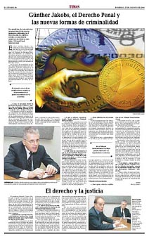

Ruben Lamagni
digital illustration
Ruben Lamagni is a professional illustrator for the Argentine newspaper El Litoral. His art is shown here both as full-size images and in the context of the newspaper articles they are intended to illustrate. Lamagni's work is an example of how successfully digital art has penetrated the citadels of journalism, which conventional art techniques had historically dominated. He uses Painter for drawing and painting, Photoshop for layers and filters, and Infini-D for the occasional 3D object. He writes, "I work from the text of the article. But I do not translate this literally to the image because they are not the same languages. The product of a literal translation from a text to an image is always poor. The matter is to create an image that invites the reader to read the text."
|
|
 |